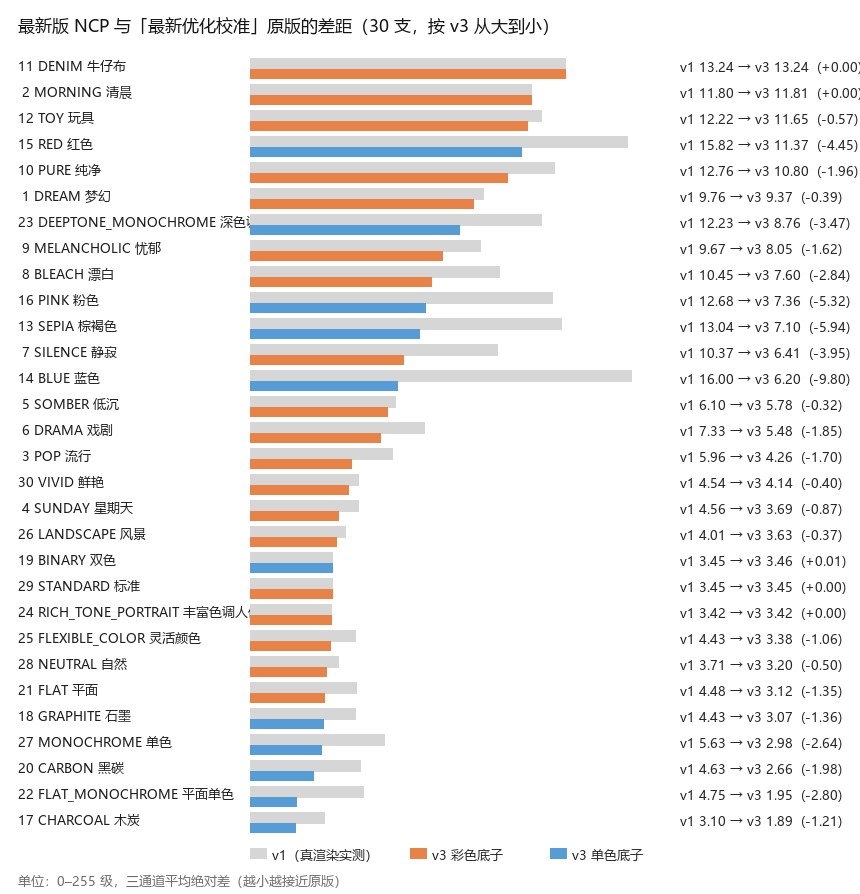
| 槽 | 滤镜 | 底子 | v1 实测 | v3 预测 | 变化 | ΔE00 | 可辨像素 | |ΔL*| | |ΔC*| | |ΔH°| |
|---|---|---|---|---|---|---|---|---|---|---|
| 1 | DREAM 梦幻 | 彩色 | 9.76 | 9.37 | -0.39 | 7.69 | 97% | 1.08 | 5.17 | 6.9° |
| 2 | MORNING 清晨 | 彩色 | 11.80 | 11.81 | +0.00 | 12.41 | 99% | 0.77 | 7.97 | 39.3° |
| 3 | POP 流行 | 彩色 | 5.96 | 4.26 | -1.70 | 3.05 | 62% | 0.97 | 2.18 | 7.3° |
| 4 | SUNDAY 星期天 | 彩色 | 4.56 | 3.69 | -0.87 | 2.51 | 48% | 1.00 | 1.71 | 6.5° |
| 5 | SOMBER 低沉 | 彩色 | 6.10 | 5.78 | -0.32 | 3.06 | 55% | 1.57 | 2.67 | 7.8° |
| 6 | DRAMA 戏剧 | 彩色 | 7.33 | 5.48 | -1.85 | 3.75 | 60% | 1.34 | 3.30 | 22.6° |
| 7 | SILENCE 静寂 | 彩色 | 10.37 | 6.41 | -3.95 | 4.46 | 57% | 1.01 | 6.61 | 6.2° |
| 8 | BLEACH 漂白 | 彩色 | 10.45 | 7.60 | -2.84 | 7.23 | 93% | 1.24 | 5.07 | 34.6° |
| 9 | MELANCHOLIC 忧郁 | 彩色 | 9.67 | 8.05 | -1.62 | 8.44 | 99% | 0.94 | 9.10 | 16.0° |
| 10 | PURE 纯净 | 彩色 | 12.76 | 10.80 | -1.96 | 9.73 | 100% | 1.20 | 9.52 | 20.3° |
| 11 | DENIM 牛仔布 | 彩色 | 13.24 | 13.24 | +0.00 | 11.68 | 99% | 1.50 | 16.54 | 19.4° |
| 12 | TOY 玩具 | 彩色 | 12.22 | 11.65 | -0.57 | 9.26 | 99% | 1.49 | 11.75 | 15.4° |
| 13 | SEPIA 棕褐色 | 单色 | 13.04 | 7.10 | -5.94 | 5.44 | 89% | 1.00 | 5.97 | 0.0° |
| 14 | BLUE 蓝色 | 单色 | 16.00 | 6.20 | -9.80 | 5.74 | 92% | 1.33 | 3.61 | 20.8° |
| 15 | RED 红色 | 单色 | 15.82 | 11.37 | -4.45 | 9.43 | 97% | 1.50 | 11.18 | 19.1° |
| 16 | PINK 粉色 | 单色 | 12.68 | 7.36 | -5.32 | 6.53 | 76% | 1.18 | 5.84 | 20.5° |
| 17 | CHARCOAL 木炭 | 单色 | 3.10 | 1.89 | -1.21 | 0.62 | 2% | 0.79 | 0.00 | 0.0° |
| 18 | GRAPHITE 石墨 | 单色 | 4.43 | 3.07 | -1.36 | 1.01 | 14% | 1.39 | 0.00 | 0.0° |
| 19 | BINARY 双色 | 单色 | 3.45 | 3.46 | +0.01 | 4.56 | 38% | 5.89 | 0.00 | 0.0° |
| 20 | CARBON 黑碳 | 单色 | 4.63 | 2.66 | -1.98 | 0.79 | 9% | 1.09 | 0.00 | 0.0° |
| 21 | FLAT 平面 | 彩色 | 4.48 | 3.12 | -1.35 | 2.43 | 44% | 0.74 | 2.28 | 4.9° |
| 22 | FLAT_MONOCHROME 平面单色 | 单色 | 4.75 | 1.95 | -2.80 | 0.62 | 3% | 0.80 | 0.00 | 0.0° |
| 23 | DEEPTONE_MONOCHROME 深色调单色 | 单色 | 12.23 | 8.76 | -3.47 | 2.75 | 26% | 3.56 | 0.00 | 0.0° |
| 24 | RICH_TONE_PORTRAIT 丰富色调人像 | 彩色 | 3.42 | 3.42 | +0.00 | 2.20 | 39% | 1.08 | 1.65 | 5.2° |
| 25 | FLEXIBLE_COLOR 灵活颜色 | 彩色 | 4.43 | 3.38 | -1.06 | 2.62 | 51% | 0.77 | 2.72 | 4.0° |
| 26 | LANDSCAPE 风景 | 彩色 | 4.01 | 3.63 | -0.37 | 2.31 | 41% | 1.09 | 1.84 | 5.0° |
| 27 | MONOCHROME 单色 | 单色 | 5.63 | 2.98 | -2.64 | 0.92 | 10% | 1.21 | 0.00 | 0.0° |
| 28 | NEUTRAL 自然 | 彩色 | 3.71 | 3.20 | -0.50 | 2.19 | 37% | 0.86 | 2.06 | 4.8° |
| 29 | STANDARD 标准 | 彩色 | 3.45 | 3.45 | +0.00 | 2.08 | 34% | 1.14 | 1.37 | 5.0° |
| 30 | VIVID 鲜艳 | 彩色 | 4.54 | 4.14 | -0.40 | 2.84 | 56% | 1.25 | 2.46 | 5.5° |
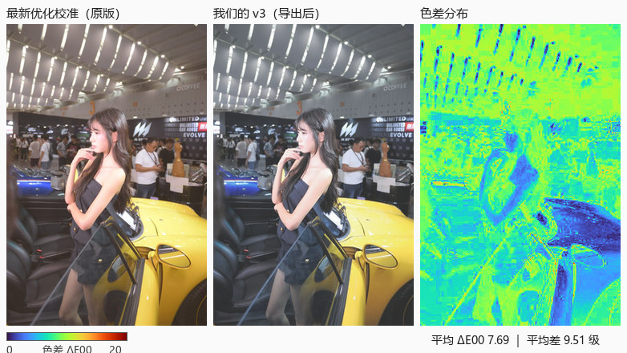
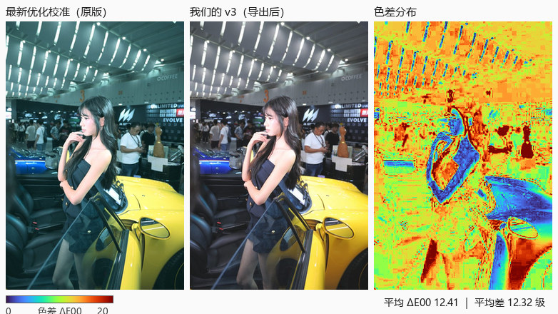
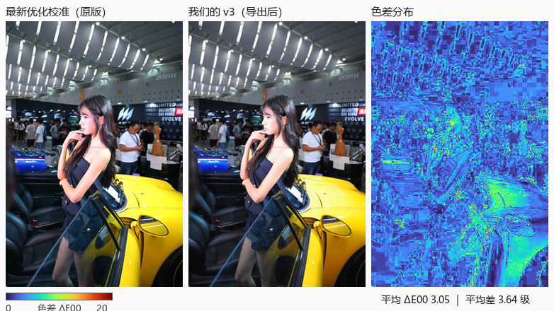
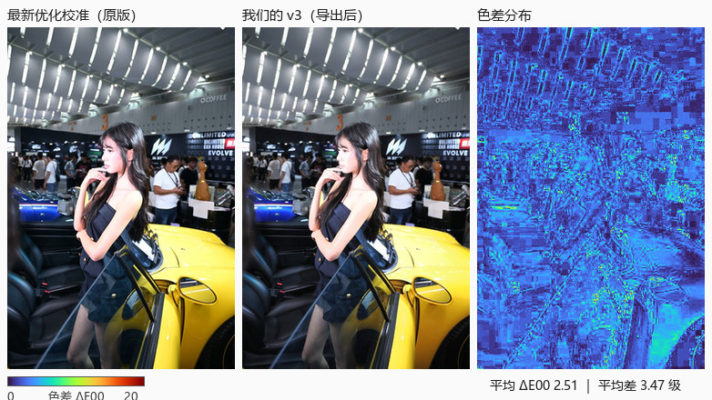
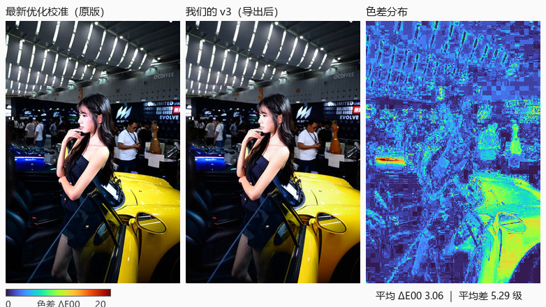
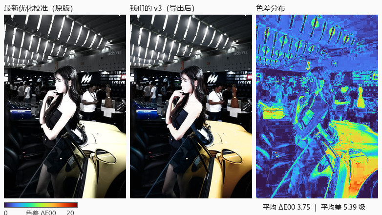
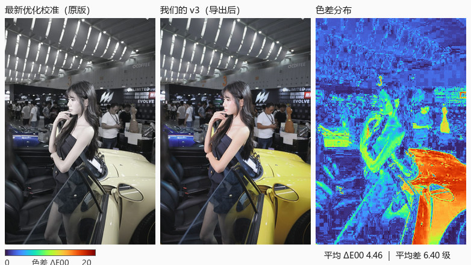
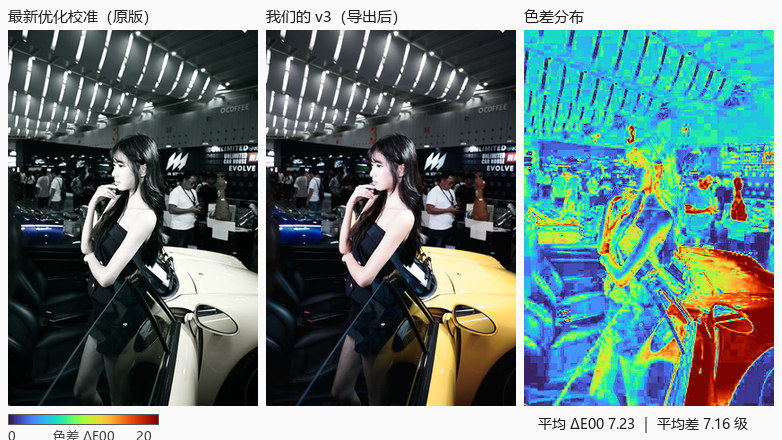
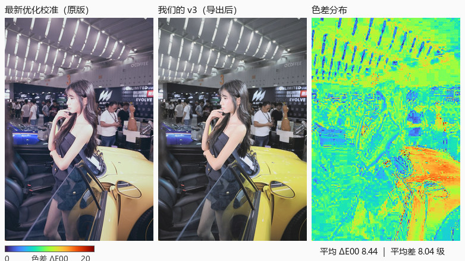
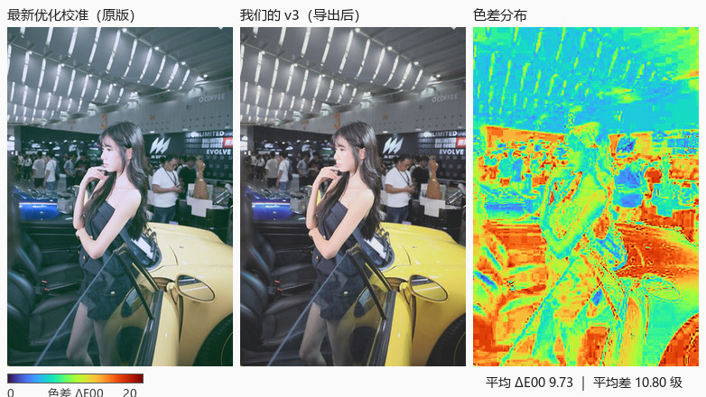
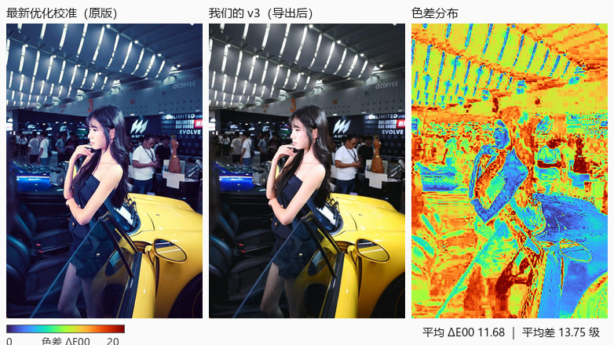
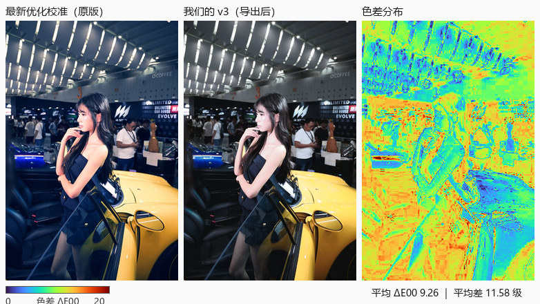
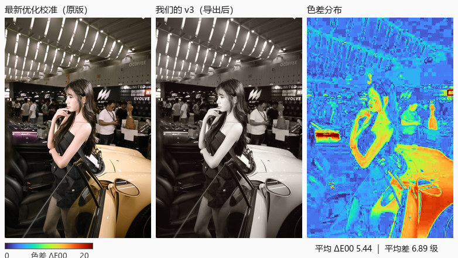
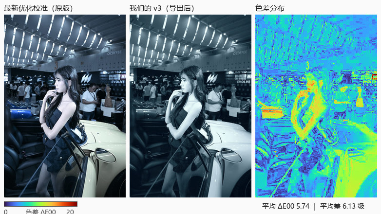
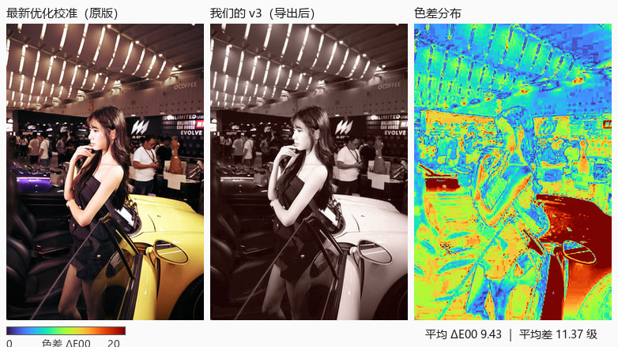
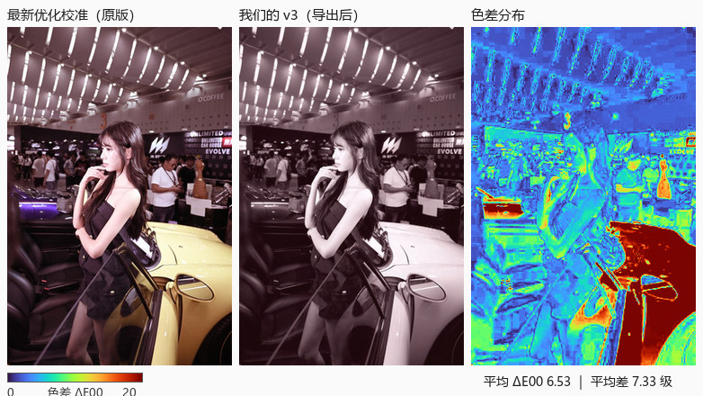
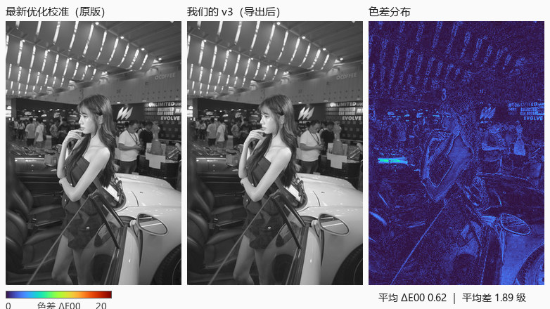
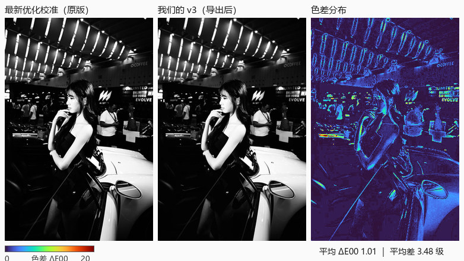
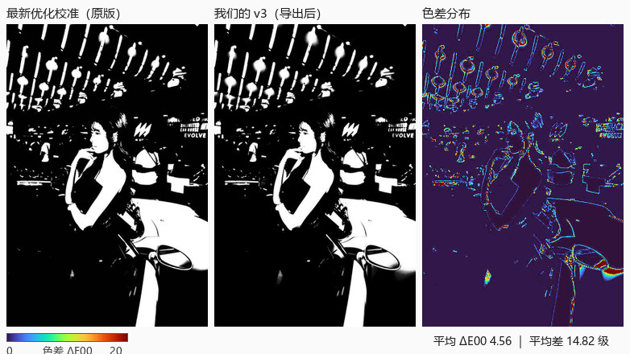
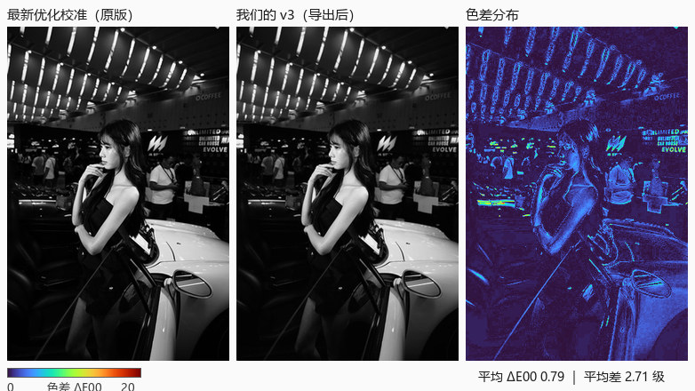
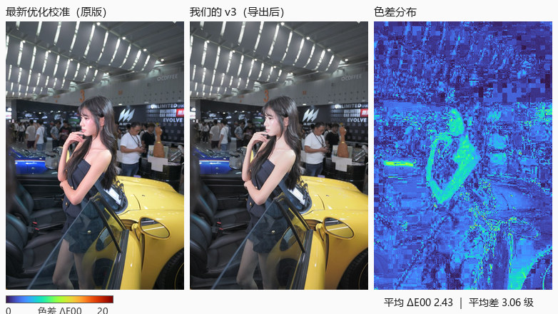
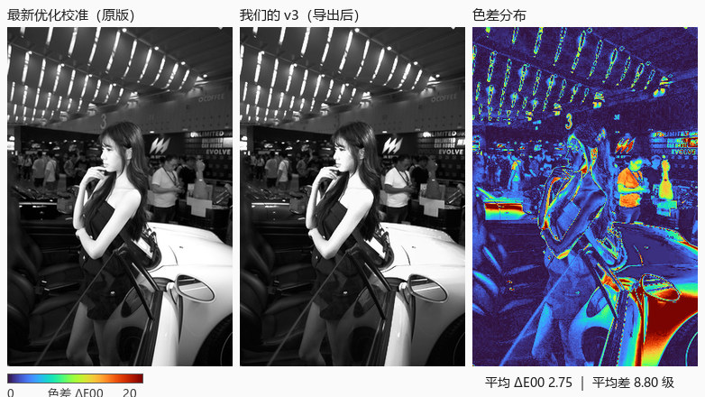
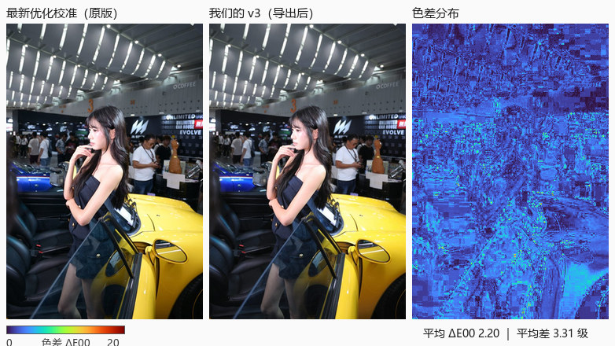
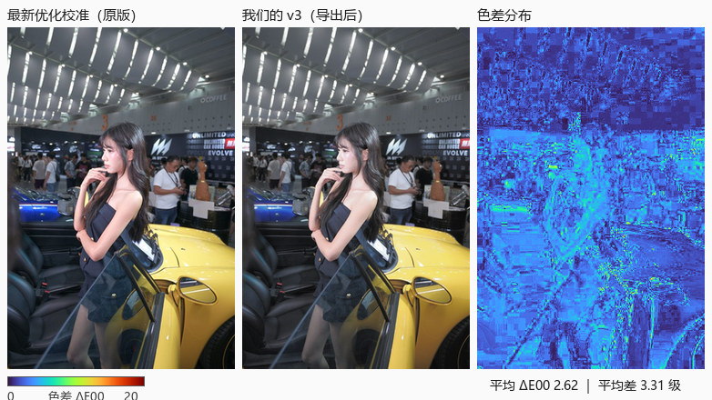
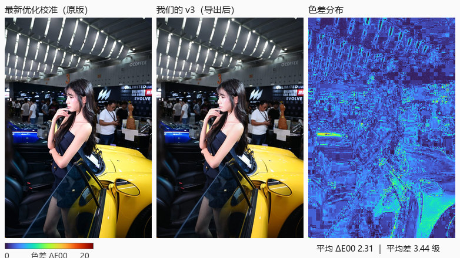
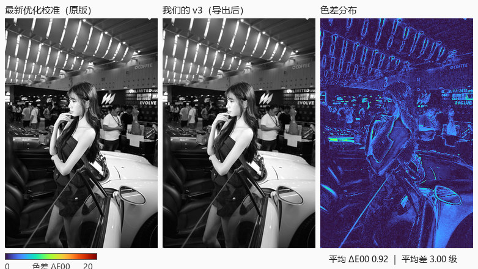
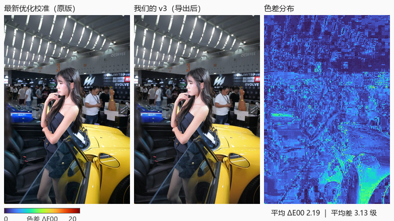
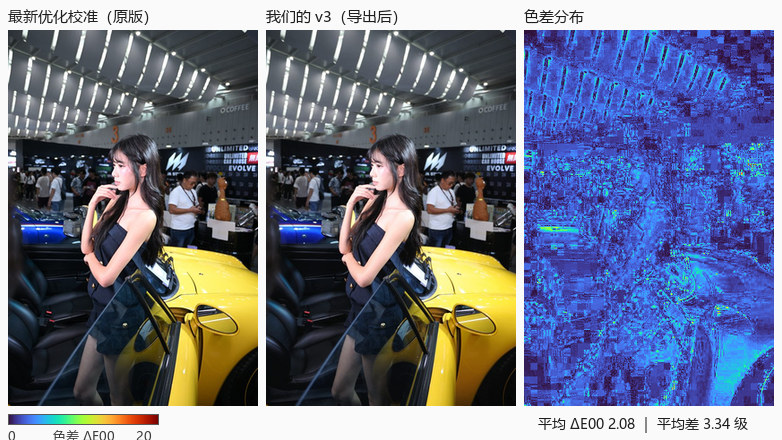
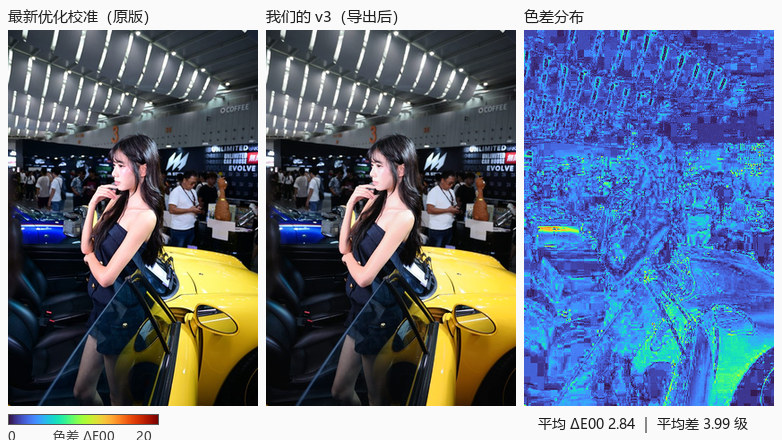